2001年7月26日(木) 晴れ 「ラスベガス旅行」
2001年7月29日(日) 晴れ
2001年7月30日(月) くもり
7月20日(金)から3日間かけて、ラスベガスに行ってきました。アメリカ国
内を飛行機を使って旅行するのはこれがはじめて。すごく楽しい旅行でした
(^^)。3日間の旅行のことをこのページにまとめたので、画像を読み込むのが
多少、遅いかもしれません。
***1日め***
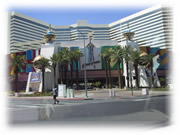
★サンノゼ空港から、ラスベガスの空港まで飛行機で1時間くらい。American
Air Line を使って朝の11時の飛行機に乗りました。
★私たちの宿泊したホテルは、ストラトスフィアホテル(Stratosphere Hotel:
702-380-7777)。右の写真です。 ラスベガスのダウンタウン（街のはずれ）に
あるため、他のホテルに比べて少し安めで、カジノの配当が他より高めだそう
です。
★でも何といっても、このホテルの呼びものは、左下の写真、アメリカ西部で
一番高いタワー、ストラトスフィア。どこからみてもすぐわかります。
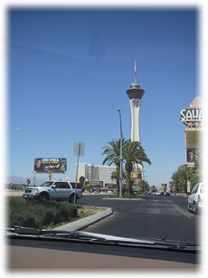
★金曜日だったせいか、どこもものすごく混んでいて、レンタカーを借りたり、
ホテルのチェックインでかなり時間をとられました。すべてが終わって一段落
したときには、夕方になっていました。
★まずはホテルの1階にあるレストランで軽く食事をしました。ウエイトレス
やウエーターたちがマイクを持って歌って踊る、一種のショーみたいなことを
していました。食べていたらいきなり歌いだすのでびっくりしました(^^;
★ラスベガスはネバダ州にあり、ネバダ州は法律で賭け事が許されている州で
す。ちなみにカリフォルニア州では違法です。ラスベガスのどのホテルにも、
カジノがあります。24時間、営業していて、いつでもお金さえあればゲームが
できます。カジノ場は写真を撮ってはいけないそうです。
★街全体がテーマパークのようになっていて、それぞれのホテルにはいろんな
趣向がこらされ、ドライブするだけでも楽しめます。ひとつひとつのホテルと
建造物が、ものすごく大きいので、遠くから見て楽しめますが、歩いてあちこ
ちにいくのはたいへん。レンタカーが便利でした。
★↓下の３つの写真↓が最初のドライブ中に撮った写真です。すべてが計算さ
れていて人工的な街です。カリフォルニアやネバダは雨が降らないので、砂漠
がたくさんあります。ラスベガスは砂漠の中のオアシスとしてできた街だそう
です。
★気温はものすごく暑いです。35度以上。でも乾燥しているので、日本ほどは
熱くないかも．．．ですが、日焼け止めは必需品です。
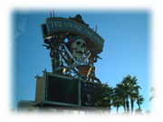
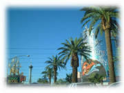
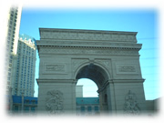
 ★さて、ラスベガスで楽しいのは夜。カジノをすることもできるし、他にも楽
しめるとこはたくさんあります。
★さて、ラスベガスで楽しいのは夜。カジノをすることもできるし、他にも楽
しめるとこはたくさんあります。
★そして本当にびっくりしたのは夜景です。ラスベガスの夜景がこんなに綺麗
だとは知りませんでした。私たちの泊まったホテルのタワーの一番上は、タワー
をぐるっと囲む展望台になっているのですが、展望台に一歩でると、その華や
かさがぱっと目に飛び込んできます。どこから見ても360度、すべて色とりど
りのライトが目を楽しませてくれます。
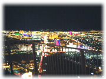
★今まで、私が見た夜景の名所と言われるところは、新宿の高層ビル、神戸の
六甲、ニューヨーク、サンフランシスコのツインピークス。私は、このラスベ
ガスの夜景が一番だと思いました。真っ暗な視界をさえぎるところがないんで
す。
★テーマパーク状のホテルの色とりどりの光はもちろん、高速道路にそって並
ぶライトの規則的な明かり、家々から出る明かり、そしてその中をときどき飛
行機が飛び立つ様は本当に綺麗でした。ずっと見ていても飽きません。
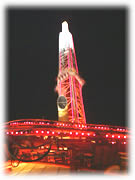
★まだまだあります。このタワーの一番上には、世界で一番高い場所にあるロー
ラーコースター(High Roller)と打ち上げ式フリーフォール(Big Shot--垂直に
すごい勢いで上にあがって、あがりきるとストンと落ちる、これがなんどか繰
り返される、遊園地によくある）があります。
★もちろん、やりました。とくにBig Shotはものすごく怖かったです。一番上
に上がったとき、目の前に見える夜景はものすごく綺麗ですが、そこに放り出
される感触があって、自分を支えているのは乗るときにつけたベルトとバーだ
け。
★そして、上がったあたりの一番怖いところで、知らないうちに写真を撮られ
ています。終わってから気に入れば買うことのできるアレです。すごい顔で叫
んでいる写真が展示されていました。そんなところで写真を撮っているとは知
らないので、終わったあとそれを見て大笑い＆恥ずかしさが入り混じって複雑
なものでした。
★ふだん、そういうものは買わないので、そのときもとっさの判断で買わなかっ
たのですが、今では買わなかったことをすごく後悔しています(^^;。あぁ、やっ
ぱり買えばよかった。自分より一緒に行った人たちがおかしかったので、買え
ばよかったの後悔は日に日に増しています(^^;
★すべて終わってホテルの部屋に戻ったのは1時30分をまわっていました。
***2日め***
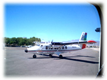
★この日の予定は「グランドキャニオン」。日帰り。10時半くらいにホテルを
出発して、ホテルから車で20分くらいのところにあるシーニック空港からセス
ナに乗りました。
★右の写真の20人乗りの小さいセスナで、私はこれが初めて。1 時間くらいの
グランドキャニオンへ向かう間の景色は絶品らしい．．．が、なんと最初に乗っ
たセスナはちょっとした故障があったらしく、上空を旋回して戻ってきてしま
いました。なんて運が悪い、いやでも、長い時間セスナを楽しめるので、よかっ
たと思うべきか(^^;
★旋回してる間は、↓下のような街↓の風景が見ることができました。最初は
それがコースだと思い、「こんなにぐるぐる回るんだね」とか話していたら、
もと来た空港に戻ることに(^^;
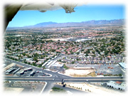
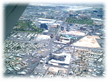
★セスナを乗り換えて出発。だんだん綺麗な景色が見えてきました．．．が、
私は乗り物酔いをしてしまって、↓下のような風景↓はほとんど直接見ること
はできませんでした。最初のうちは少し見れたんだけど、起きていると吐きそ
うになるので、たいへんでした(;o;)
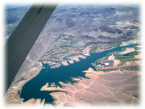
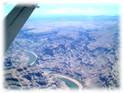
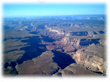
★私たちはツアーに申し込んでいたので、着いてからもちゃんと案内してくれ
て楽でした。グランドキャニオンには、サウスリム（南の縁）とノースリム
（北の縁）があるそうですが、私たちが着いた場所はサウスリム。反対側のノー
スリムを見る形になります。
★ヤバパイロッジ(Yavapai)で昼食をすませ、2箇所のポイントからグランドキャ
ニオンの広大な風景を楽しむことができました。
★最初のポイントからの風景が↓下の３つ↓。
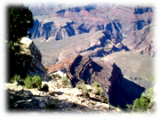
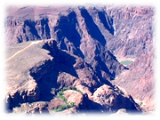
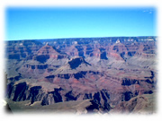
★次のポイントからの風景が↓下の３つ↓。
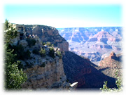
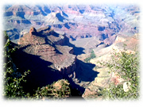
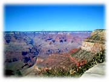
★さて、行きのセスナでのトラブルのために、1時間半くらい遅れてしまい、
そのため、夜の7時半に予約していたショーの時間ギリギリとなってしまいま
した。本当はホテルに戻って一休みして着替えていくつもりが、そんな余裕は
なく、空港から送迎バスで直行してもらいました。
★ショーは、バリーズ(Bally's)というホテルのJubilee。有名なところだそう
です。このショーは、女性がトップレスで踊るため、写真は厳禁ということで
した。
★ショーは、順番にShowtime!、Samson and Dlilah、Titanic、The Finaleが
あり、それぞれのショーの間に Dirk Arthurという人のマジックが入りました。
★ホテルに戻ってきたら、もう10時すぎ。でもこれが最後の夜。休む暇もなく
夕食、そしてカジノをする人と夜景を見る人に分かれ、私は夜景をもう一度見
ました。何度見ても楽しいものです。
★ホテルに戻ると、また2時近く。でもカジノ組はまだ戻ってきていませんで
した(^^;
***3日め***
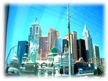
★この日はチェックアウトして、レンタカーに荷物を積み込み、観光とショッ
ピングということにしました。まず、帰りのレンタカーを返す場所をチェック
がてらドライブ。
★右の写真→は、ニューヨークニューヨークというホテルです。ニューヨークの
マンハッタンをイメージして造られたそう。手前に、わかるかな、自由の女神
があります。
★私はニューヨーク州に留学していたので、どんな風にできているのか期待し
ていたんだけど、近くでみると意外に安っぽく「遠くから見るだけでいいや」
と思いました(^^;
★左下の写真は、MGMグランド。巨大ホテルとしてして名をはせているらしい。
★真中は、ルクソールホテル。エジプトのピラミッドのイメージでものすごく
巨大でした。私たちはルクソールには最初から興味があったので、車を止めて
中も見ることにしていました。真下から撮ったものです。本当に大きい。
★そして右下は、ルクソールホテルの前に立つ巨大スフィンクス。身体が動物
の形をしていました。
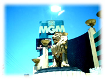
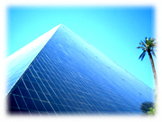
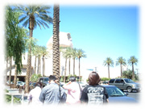
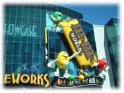
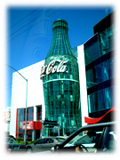
←Coka Cola や、M&M Guys→ なんてのもありました。
★他にも、Treasure Island、アラジン、サーカスサーカス、ベネチアン、な
ど、すべて名前の通りのものが売りです。
★ミラージュ、バリーズ、ベラッジオなどのホテルも有名らしい。
★とにかくすべてが大きくて、人も多く、道路や駐車場も混んでいるため、丸
一日あったけど、意外にたくさんは回れないまま、あっというまに時間が過ぎ
ていきました。
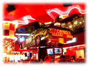
★ランチというか夕食というか、4時くらいになって食事をとりました。右→
はNasCar Cafe。1日めにホテルに行く途中に見つけて、ぜひ行きたいと思って
いたところです。右の写真のように→NasCarの車がレストランの真中に釣られ
ています。
★NasCarについては以前、日記に書いたこ
とがありますが、こっちではメジャーな車のレースの種類で、私もあれか
ら何度かテレビで見て、教えてもらって、だんだんわかるようになってきまし
た。
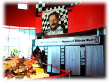
★NasCar のいいところは「見せるレース」という感じがするところです。そ
れぞれの車が色とりどりできれいだし、レース中に事故が起こると専用の車が
先導して前の車を抜かしてはいけない時間ができるんだけど、1列に並んでき
れいなものです。また、この時間のおかげで早い車と遅い車の差がに大きくで
ることがなく、ずっとレースを、時間ではなく順位で楽しむことができます。
★←左は、今年の2月にレース中に亡くなったDale Earnhardtをしのんででき
た一角です。NasCar Cafeの中にありました。彼は大人気だったようで、たく
さんの花束や手紙が置いてありました。
 ★食事を終えて、最後に行ったのは、シーザースパレスのショッピングモール。
右の写真→です。
★食事を終えて、最後に行ったのは、シーザースパレスのショッピングモール。
右の写真→です。
★本当は最後の日は、おみやげも兼ねて買い物をしたいと思っていたのですが、
ここまでまったく時間がありませんでした。時間も押し迫って1時間くらいし
か残っていなかったので、そこらへんのお店で買い物してもいいと私は思って
いたのですが、実際、このショッピングモールは行ってみて大正解でした。
★シーザーの名の通り古代ギリシャ・ローマ帝国がテーマで、ホテル自体、テー
マホテルの草分け的な存在だそうです。
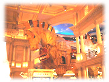
★←左はモールの中央あたりにあった巨大木馬。
★写真のように、天井には空と雲が描かれていて、歩くと雲が動くように見え、
しばらくすると夕焼けのようになったりして、すごく面白かったです。ローマ
時代にショッピングしているような気分になりました。
★ただし、時間がなかっただけでなく、入っている店舗は高級なとこばかりだっ
たので、やはり、ウィンドウズショッピングに終わりました(^^;
★このあと、レンタカーを返してラスベガス空港へ。9時の飛行機でサンノゼ
に帰ってきました。
★なんだかとても充実した楽しい旅行でした(^^)。またいきたいな(^^)
（終わり）
|
 7月の日記(3)
7月の日記(3)